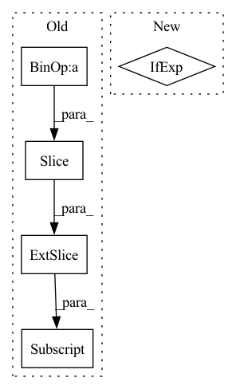

Pattern ID :32744
Before Change
causal_mask_chunk = None
if causal:
causal_mask_chunk = causal_mask[
(q_index * q_bucket_size):(q_index * q_bucket_size + q_bucket_size),
(k_index * k_bucket_size):(k_index * k_bucket_size + k_bucket_size),
]
exp_weight_chunk, weighted_value_chunk, weight_max_chunk = checkpointed_summarize_qkv_chunk(
q_chunk,
k_chunk,After Change
for k_index, (k_chunk, v_chunk, mask_chunk) in enumerate(zip(k_chunks, v_chunks, mask_chunks)):
causal_mask_chunk = causal_mask_chunks[q_index][k_index] if causal else None
exp_weight_chunk, weighted_value_chunk, weight_max_chunk = checkpointed_summarize_qkv_chunk(
q_chunk,In pattern: SUPERPATTERN
Frequency: 3
Non-data size: 5
Instances Fragment ID: 95132491
Project Name: lucidrains/memory-efficient-attention-pytorch
Commit Name: 3411b7669f05bf26c0cfc6afb6fc4dfdf51b3c9b
Time: 2022-03-03
Author: lucidrains@gmail.com
File Name: memory_efficient_attention_pytorch/memory_efficient_attention.py
M Class Name: AnonimousClass
N Class Name: AnonimousClass
M Method Name: memory_efficient_attention(8)
N Method Name: memory_efficient_attention(8)
M Parent Class:
N Parent Class:
M File Name: memory_efficient_attention_pytorch/memory_efficient_attention.py
N File Name: memory_efficient_attention_pytorch/memory_efficient_attention.py
M Start Line: 99
M End Line: 113
N Start Line: 94
N End Line: 108
Before Change
ind[k] = ct_int[1] * output_w + ct_int[0]
reg[k] = ct - ct_int
reg_mask[k] = 1
cat_spec_wh[k, cls_id * 2: cls_id * 2 + 2] = wh[k]
cat_spec_mask[k, cls_id * 2: cls_id * 2 + 2] = 1
gt_det.append([ct[0] - w / 2, ct[1] - h / 2,
ct[0] + w / 2, ct[1] + h / 2, 1, cls_id])After Change
target_domain_img = (target_domain_img - self.mean) / self.std
target_domain_img = target_domain_img.transpose(2, 0, 1)
gt_det = np.array(gt_det, dtype=np.float32) if len(
gt_det) > 0 else np.zeros((1, 6), dtype=np.float32)
ret = {
"input": inp, Fragment ID: 95132495
Project Name: scheckmedia/centernet-uda
Commit Name: 0022f53057b7af90ffecca0d10d068fe88c6ae66
Time: 2020-07-30
Author: tobias.scheck@etit.tu-chemnitz.de
File Name: datasets/coco.py
M Class Name: Dataset
N Class Name: Dataset
M Method Name: __getitem__(2)
N Method Name: __getitem__(2)
M Parent Class: data.Dataset
N Parent Class: data.Dataset
M File Name: datasets/coco.py
N File Name: datasets/coco.py
M Start Line: 103
M End Line: 143
N Start Line: 78
N End Line: 173
Before Change
spatial_cls_tokens = repeat(self.spatial_cls_token, "1 1 d -> b f 1 d", b = b, f = f)
x = torch.cat((spatial_cls_tokens, x), dim = 2)
x += self.pos_embedding[:, :(n + 1)]
x = self.dropout(x)
x = rearrange(x, "b f n d -> (b f) n d")
After Change
// excise out the spatial cls tokens or average pool for temporal attention
x = x[:, :, 0] if not self.global_average_pool else reduce(x, "b f n d -> b f d", "mean")
// append temporal CLS tokens
Fragment ID: 95132499
Project Name: lucidrains/vit-pytorch
Commit Name: 6ec8fdaa6dc114b3789b80635a64b126756c02c8
Time: 2022-10-24
Author: lucidrains@gmail.com
File Name: vit_pytorch/vivit.py
M Class Name: ViT
N Class Name: ViT
M Method Name: forward(2)
N Method Name: forward(2)
M Parent Class: nn.Module
N Parent Class: nn.Module
M File Name: vit_pytorch/vivit.py
N File Name: vit_pytorch/vivit.py
M Start Line: 139
M End Line: 166
N Start Line: 144
N End Line: 180